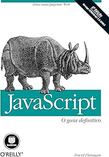
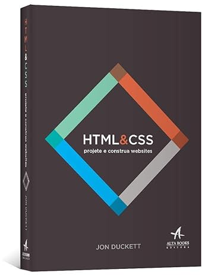

Hoje, na biblioteca da faculdade, falta livros sobre algumas linguagens de programação. Isso pode atrapalhar os estudantes que preferem a leitura mais fisica à Digital, e acabam ficando sem recursos para aprender, fazer trabalhos bons e ver coisas de ângulos diferentes e tambem pesquisar caso queiram buscar uma especialização. A Biblioteca Virtual da Dom Helder Câmara é uma mão na roda. Tem livros, artigos e teses online, ajudando estudantes e pesquisadores, mas quando se trata de um ensino sobre uma linguagem fora do plano de estudo, não é fornecido um livro especificamente sobre essa lingaguem. Por isso viemos com esse prototipo para ajudar os Alunos que enfrentam esse problema de Dom Helder Camara.

JavaScript: O Guia Definitivo", em sua 6ª edição, explora desde os fundamentos até as APIs do lado do cliente, com atualizações sobre ECMAScript 5, HTML5, jQuery e JavaScript no servidor. Ideal para programadores experientes em busca de domínio na linguagem web, é um recurso completo e essencial para aprofundar e ampliar conhecimentos em JavaScript..

Este guia simplifica a criação de sites, ideal para iniciantes ou quem busca mais controle. Com explicações visuais, amostras de código e orientação sobre design, é uma ferramenta acessível para criar websites atraentes, mesmo sem experiência prévia em programação.